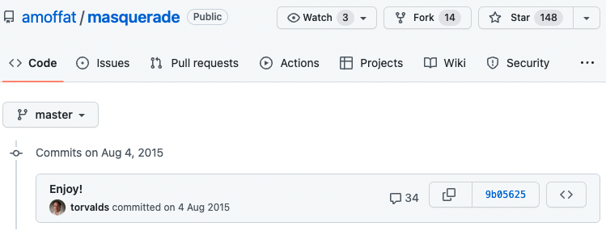
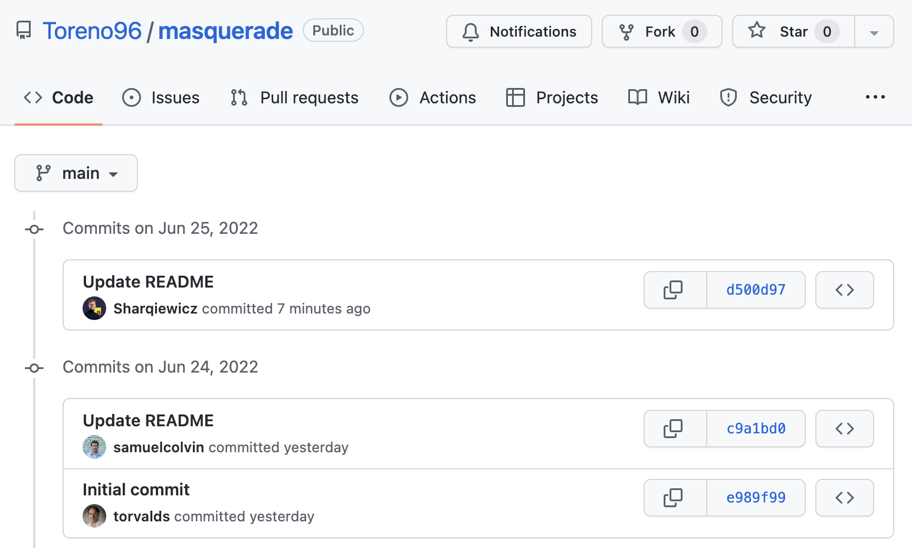
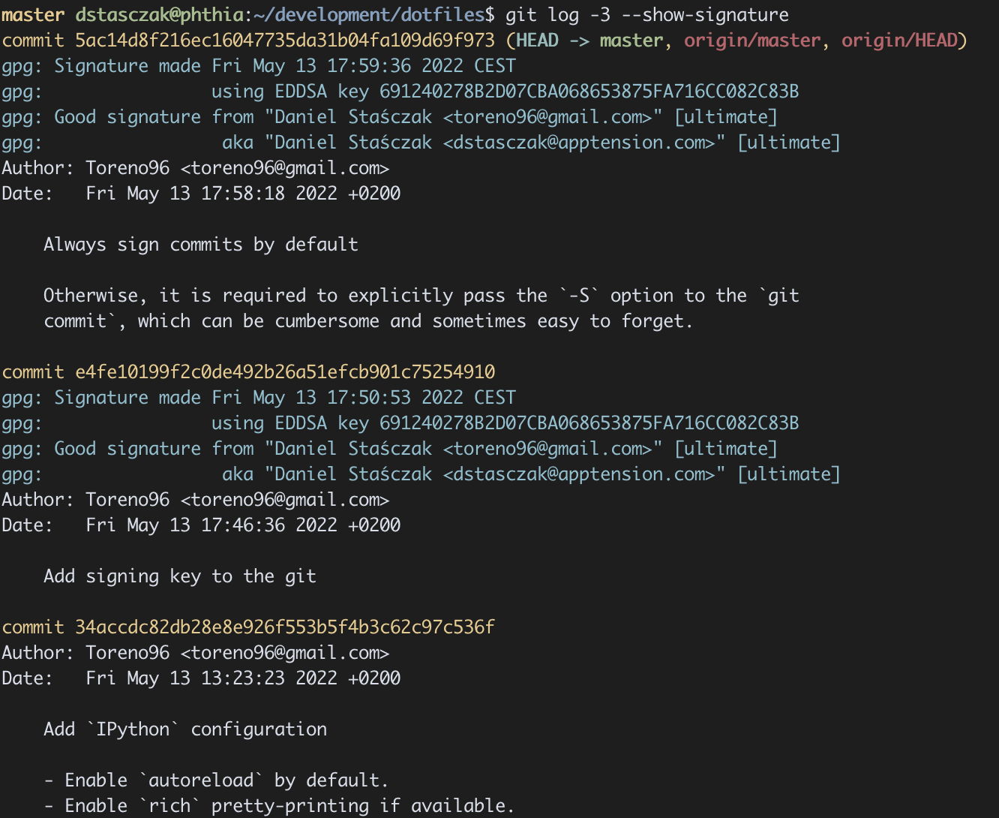
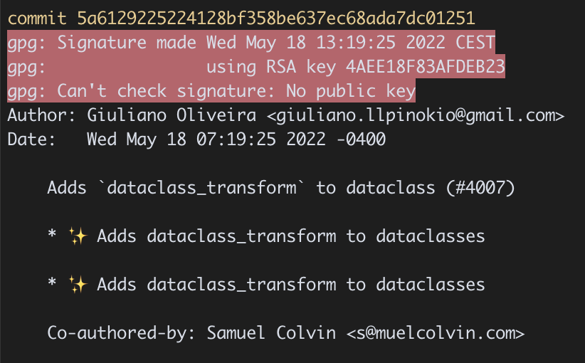

class: center, middle # Wprowadzenie do GnuPG ### Daniel Staśczak Prezentacja przygotowana z użyciem <https://github.com/gnab/remark> --- # Czym jest GnuPG? > GnuPG is a complete and free implementation of the OpenPGP standard as defined by RFC4880 (also known as PGP). GnuPG allows you to encrypt and sign your data and communications […] > > GnuPG, also known as GPG, is a command line tool […] > > GnuPG also provides support for S/MIME and Secure Shell (ssh). > > — <cite><https://www.gnupg.org/></cite> --- # Jak wymawiać GnuPG? > The name “GNU” […] is pronounced as one syllable with a hard g, like “grew” but with the letter n instead of r. > > — <https://www.gnu.org/gnu/pronunciation.en.html> > “GNU”, followed by the letters “P” and “G”. > > — <https://www.gnupg.org/faq/gnupg-faq.html#pronunciation> **TL;DR** /ɡnuːpiːdʒiː/ lub /dʒiːpiːdʒiː/ ??? Dygresja: polecam nauczyć się odczytywać zapis fonetyczny na potrzeby języka ang --- # Jak zainstalować GnuPG? Debian-based dystrybucje Linuxa <b style="font-size:10px;">(I use Arch BTW)</b>: ```shell # apt-get update && apt-get install gpg ``` macOS: ```bash $ brew install gpg ``` Aczkolwiek, jest duża szansa, że macie GPG już zainstalowane! Aby to sprawdzić: ```bash $ command -v gpg /opt/homebrew/bin/gpg ``` --- # Przykładowe use-case'y 1. Szyfrowanie plików 2. Podpisywanie git commitów… 🙌 3. … bądź jakichkolwiek plików 4. Menadżer haseł `pass` i plugin `pass-otp` (aczkolwiek od drugiego bardziej polecam <https://github.com/apptension/onetimepass> 😉) --- # Szyfrowanie symetryczne vs. asymetryczne -- ## Symetryczne - Powszechne szyfrowanie z użyciem hasła. - Każdy kto zna hasło jest w stanie odszyfrować zaszyfrowane dane. - Mniej skomplikowane, ale mniej bezpieczne. -- ## Asymetryczne - Wykorzystuje klucz publiczny (_public key_) i klucz prywatny (_secret or private key_). - Aby zaszyfrować dane, wymagane jest posiadanie klucza _publicznego_ odbiorcy. - Aby odszyfrować dane, wymagane jest posiadanie klucza _prywatnego_ odbiorcy. - Bardziej skomplikowane, ale bardziej bezpieczne. ??? GPG wspiera oba, ale jego główne funkcjonalności (w tym podpisywanie commitów) wykorzystuje szyfrowanie asymetryczne. Przykład z Krystianem, mną i przesłaniem zaszyfrowanego pliku `.env`. --- # Ale po co właściwie podpisywać commity? <https://github.com/amoffat/masquerade> ```bash $ git config user.name 'Linus Torvalds' $ git config user.email 'torvalds@linux-foundation.org' $ git commit -m "Enjoy!" ``` .left[] --- # Ale po co właściwie podpisywać commity? <https://github.com/Toreno96/masquerade> .left[] --- # Podpisane vs. niepodpisane commity <https://github.com/Toreno96/dotfiles> .left[<img src="images/git_signed_commits_example_github.png">] ??? Mniej istotne w projektach closed-source Bardziej istotne w projektach open-source --- class: center, middle # Pytania do podpisywania commitów? --- # Konfiguracja GnuPG Upewnij się, że posiadasz możliwie najnowszą wersję `gpg`! ```bash $ gpg --version gpg (GnuPG) 2.3.6 … Supported algorithms: Pubkey: RSA, ELG, DSA, ECDH, ECDSA, EDDSA Cipher: IDEA, 3DES, CAST5, BLOWFISH, AES, AES192, AES256, TWOFISH, CAMELLIA128, CAMELLIA192, CAMELLIA256 AEAD: EAX, OCB Hash: SHA1, RIPEMD160, SHA256, SHA384, SHA512, SHA224 Compression: Uncompressed, ZIP, ZLIB, BZIP2 ``` Najnowsza dostępna wersja: <https://www.gnupg.org/download/index.html> --- # Konfiguracja GnuPG Wygenerowanie nowego klucza prywatnego (_secret key_): ```bash $ gpg --full-gen-key ``` lub ```bash $ gpg --full-generate-key ``` --- # Konfiguracja GnuPG — wybór algorytmu ```bash Please select what kind of key you want: (1) RSA and RSA (2) DSA and Elgamal (3) DSA (sign only) (4) RSA (sign only) * (9) ECC (sign and encrypt) *default* (10) ECC (sign only) (14) Existing key from card *Your selection? 9 Please select which elliptic curve you want: * (1) Curve 25519 *default* (4) NIST P-384 (6) Brainpool P-256 *Your selection? 1 ``` Więcej detali nt. wyboru algorytmu: <https://www.gnupg.org/faq/gnupg-faq.html#advanced_topics> --- # Konfiguracja GnuPG — termin ważności klucza ```bash Please specify how long the key should be valid. 0 = key does not expire <n> = key expires in n days <n>w = key expires in n weeks <n>m = key expires in n months <n>y = key expires in n years *Key is valid for? (0) 1y Key expires at Sat May 27 14:04:45 2023 CEST *Is this correct? (y/N) y ``` -- - Właściwość (_property_) zaszyta w kluczu publicznym. -- - Istnieją różne opinie nt. tego czy i jak długi termin ważności jest zalecany. -- - Posiadając dostęp do klucza prywatnego i znając hasło do klucza prywatnego **można** przedłużyć termin ważności _po_ przeterminowaniu. -- - Termin ważności przydaje się w przypadku _zgubienia_ klucza. --- # Konfiguracja GnuPG — zdefiniowanie tożsamości ```bash GnuPG needs to construct a user ID to identify your key. *Real name: Daniel Staśczak ``` --- # Konfiguracja GnuPG — zdefiniowanie tożsamości ```bash GnuPG needs to construct a user ID to identify your key. Real name: Daniel Staśczak *Email address: dstasczak@apptension.com ``` --- # Konfiguracja GnuPG — zdefiniowanie tożsamości ```bash GnuPG needs to construct a user ID to identify your key. Real name: Daniel Staśczak Email address: dstasczak@apptension.com *Comment: ``` --- # Konfiguracja GnuPG — zdefiniowanie tożsamości ```bash GnuPG needs to construct a user ID to identify your key. Real name: Daniel Staśczak Email address: dstasczak@apptension.com Comment: You are using the 'utf-8' character set. You selected this USER-ID: "Daniel Staśczak <dstasczak@apptension.com>" *Change (N)ame, (C)omment, (E)mail or (O)kay/(Q)uit? o ``` --- # Konfiguracja GnuPG — wybór hasła ```bash ┌──────────────────────────────────────────────────────┐ │ Please enter the passphrase to │ │ protect your new key │ │ │ *│ Passphrase: ________________________________________ │ │ │ │ <OK> <Cancel> │ └──────────────────────────────────────────────────────┘ ``` - _Bezpieczne_ hasło. - Sugeruję wygenerować je i przechowywać w menadżerze haseł, tak jak każde inne hasło do internetowego konta. --- # Konfiguracja GnuPG — info o wygenerowanym kluczu ```bash *gpg: revocation certificate stored as *↪'/Users/dstasczak/.gnupg/openpgp-revocs.d/ *↪EE784B53337769D26BC2D2F0CF25D18C2C4D3CBB.rev' public and secret key created and signed. *pub ed25519 2022-05-27 [SC] [expires: 2023-05-27] * EE784B53337769D26BC2D2F0CF25D18C2C4D3CBB *uid Daniel Staśczak <dstasczak@apptension.com> *sub cv25519 2022-05-27 [E] [expires: 2023-05-27] ``` --- # Konfiguracja GnuPG – _revocation certificate_ - Pozwala na **nieodwracalne** unieważnienie klucza. - Prawdziwy mechanizm bezpieczeństwa przeciwko kradzieży klucza (vs. termin ważności). - Należy go traktować na równi z hasłem, tzn. przechowywać w bezpiecznym, zaszyfrowanym miejscu, np. menadżerze haseł. - Po zapisaniu w powyższym, warto go usunąć z `~/.gnupg/openpgp-revocs.d/`. Instrukcje jak unieważnić klucz: <https://wiki.archlinux.org/title/GnuPG#Revoke_a_key> --- # Wylistowanie posiadanych kluczy prywatnych ```bash $ gpg -K /Users/dstasczak/.gnupg/pubring.kbx ----------------------------------- sec ed25519 2022-05-27 [SC] [expires: 2023-05-27] EE784B53337769D26BC2D2F0CF25D18C2C4D3CBB uid [ultimate] Daniel Staśczak <dstasczak@apptension.com> ssb cv25519 2022-05-27 [E] [expires: 2023-05-27] ``` --- # Wylistowanie posiadanych kluczy publicznych ```bash $ gpg -k /Users/dstasczak/.gnupg/pubring.kbx ----------------------------------- pub ed25519 2022-05-27 [SC] [expires: 2023-05-27] EE784B53337769D26BC2D2F0CF25D18C2C4D3CBB uid [ultimate] Daniel Staśczak <dstasczak@apptension.com> sub cv25519 2022-05-27 [E] [expires: 2023-05-27] ``` W tym kluczy publicznych należących do innych osób! --- # Parametr `user-id` `gpg` często wymaga podania parametru określonego jako `user-id`. Może to być pełna wartość tożsamości, np. `Daniel Staśczak <dstasczak@apptension.com>`, ale też fragment wartości, np. `dstasczak@apptension.com` albo `Daniel`. ```bash $ gpg -k … *uid [ultimate] Daniel Staśczak <dstasczak@apptension.com> … ``` Ale też tzw. `keyid`: ```bash $ gpg -k --keyid-format=long … *pub ed25519/CF25D18C2C4D3CBB 2022-05-27 [SC] [expires: 2023-05-27] … ``` Na przykładzie `CF25D18C2C4D3CBB`. --- # Modyfikowanie istniejącego klucza ```bash $ gpg --edit-key <user-id> … gpg> ``` -- Wybrane podstawowe komendy: ```bash > list # list keys and user IDs > passwd # change the passphrase > revkey # revoke the key > expire # change the expiration period > adduid # add additional identity > primary # set the primary identity ``` --- # Dodawanie tożsamości ```bash *gpg> adduid Real name: Daniel Staśczak Email address: foo@example.com Comment: You are using the 'utf-8' character set. You selected this USER-ID: "Daniel Staśczak <foo@example.com>" Change (N)ame, (C)omment, (E)mail or (O)kay/(Q)uit? o … [ultimate] (1) Daniel Staśczak <dstasczak@apptension.com> [ unknown] (2). Daniel Staśczak <foo@example.com> gpg> uid 1 gpg> primary gpg> save $ gpg -k … uid [ultimate] Daniel Staśczak <dstasczak@apptension.com> uid [ultimate] Daniel Staśczak <foo@example.com> ``` --- # Dodawanie tożsamości ```bash gpg> adduid *Real name: Daniel Staśczak *Email address: foo@example.com *Comment: *You are using the 'utf-8' character set. *You selected this USER-ID: * "Daniel Staśczak <foo@example.com>" * *Change (N)ame, (C)omment, (E)mail or (O)kay/(Q)uit? o … [ultimate] (1) Daniel Staśczak <dstasczak@apptension.com> [ unknown] (2). Daniel Staśczak <foo@example.com> gpg> uid 1 gpg> primary gpg> save $ gpg -k … uid [ultimate] Daniel Staśczak <dstasczak@apptension.com> uid [ultimate] Daniel Staśczak <foo@example.com> ``` --- # Dodawanie tożsamości ```bash gpg> adduid Real name: Daniel Staśczak Email address: foo@example.com Comment: You are using the 'utf-8' character set. You selected this USER-ID: "Daniel Staśczak <foo@example.com>" Change (N)ame, (C)omment, (E)mail or (O)kay/(Q)uit? o … *[ultimate] (1) Daniel Staśczak <dstasczak@apptension.com> *[ unknown] (2). Daniel Staśczak <foo@example.com> gpg> uid 1 gpg> primary gpg> save $ gpg -k … uid [ultimate] Daniel Staśczak <dstasczak@apptension.com> uid [ultimate] Daniel Staśczak <foo@example.com> ``` --- # Dodawanie tożsamości ```bash gpg> adduid Real name: Daniel Staśczak Email address: foo@example.com Comment: You are using the 'utf-8' character set. You selected this USER-ID: "Daniel Staśczak <foo@example.com>" Change (N)ame, (C)omment, (E)mail or (O)kay/(Q)uit? o … *[ultimate] (1) Daniel Staśczak <dstasczak@apptension.com> [ unknown] (2). Daniel Staśczak <foo@example.com> *gpg> uid 1 gpg> primary gpg> save $ gpg -k … uid [ultimate] Daniel Staśczak <dstasczak@apptension.com> uid [ultimate] Daniel Staśczak <foo@example.com> ``` --- # Dodawanie tożsamości ```bash gpg> adduid Real name: Daniel Staśczak Email address: foo@example.com Comment: You are using the 'utf-8' character set. You selected this USER-ID: "Daniel Staśczak <foo@example.com>" Change (N)ame, (C)omment, (E)mail or (O)kay/(Q)uit? o … [ultimate] (1) Daniel Staśczak <dstasczak@apptension.com> [ unknown] (2). Daniel Staśczak <foo@example.com> gpg> uid 1 *gpg> primary gpg> save $ gpg -k … uid [ultimate] Daniel Staśczak <dstasczak@apptension.com> uid [ultimate] Daniel Staśczak <foo@example.com> ``` --- # Dodawanie tożsamości ```bash gpg> adduid Real name: Daniel Staśczak Email address: foo@example.com Comment: You are using the 'utf-8' character set. You selected this USER-ID: "Daniel Staśczak <foo@example.com>" Change (N)ame, (C)omment, (E)mail or (O)kay/(Q)uit? o … [ultimate] (1) Daniel Staśczak <dstasczak@apptension.com> [ unknown] (2). Daniel Staśczak <foo@example.com> gpg> uid 1 gpg> primary *gpg> save $ gpg -k … uid [ultimate] Daniel Staśczak <dstasczak@apptension.com> uid [ultimate] Daniel Staśczak <foo@example.com> ``` --- # Dodawanie tożsamości ```bash gpg> adduid Real name: Daniel Staśczak Email address: foo@example.com Comment: You are using the 'utf-8' character set. You selected this USER-ID: "Daniel Staśczak <foo@example.com>" Change (N)ame, (C)omment, (E)mail or (O)kay/(Q)uit? o … [ultimate] (1) Daniel Staśczak <dstasczak@apptension.com> [ unknown] (2). Daniel Staśczak <foo@example.com> gpg> uid 1 gpg> primary gpg> save *$ gpg -k … *uid [ultimate] Daniel Staśczak <dstasczak@apptension.com> *uid [ultimate] Daniel Staśczak <foo@example.com> ``` --- # Przedłużenie lub usunięcie terminu ważności ```bash *gpg> expire Changing expiration time for the primary key. Please specify how long the key should be valid. 0 = key does not expire <n> = key expires in n days <n>w = key expires in n weeks <n>m = key expires in n months <n>y = key expires in n years Key is valid for? (0) 1m Key expires at Thu Jul 14 18:14:15 2022 CEST Is this correct? (y/N) y … gpg: WARNING: Your encryption subkey expires soon. gpg: You may want to change its expiration date too. ``` --- # Przedłużenie lub usunięcie terminu ważności ```bash gpg> expire *Changing expiration time for the primary key. *Please specify how long the key should be valid. * 0 = key does not expire * <n> = key expires in n days * <n>w = key expires in n weeks * <n>m = key expires in n months * <n>y = key expires in n years *Key is valid for? (0) 1m *Key expires at Thu Jul 14 18:14:15 2022 CEST *Is this correct? (y/N) y … gpg: WARNING: Your encryption subkey expires soon. gpg: You may want to change its expiration date too. ``` --- # Przedłużenie lub usunięcie terminu ważności ```bash gpg> expire Changing expiration time for the primary key. Please specify how long the key should be valid. 0 = key does not expire <n> = key expires in n days <n>w = key expires in n weeks <n>m = key expires in n months <n>y = key expires in n years Key is valid for? (0) 1m Key expires at Thu Jul 14 18:14:15 2022 CEST Is this correct? (y/N) y … *gpg: WARNING: Your encryption subkey expires soon. *gpg: You may want to change its expiration date too. ``` --- # Przedłużenie lub usunięcie terminu ważności – _encryption subkey_ ```bash *gpg> list sec ed25519/22D9343A769EFFEE created: 2022-05-11 expires: 2022-07-14 usage: SC trust: ultimate validity: ultimate ssb cv25519/43FAA6378B256993 created: 2022-05-11 expired: 2022-06-12 usage: E [ultimate] (1). Daniel Staśczak <toreno96@gmail.com> [ultimate] (2) Daniel Staśczak <dstasczak@apptension.com> ``` --- # Przedłużenie lub usunięcie terminu ważności – _encryption subkey_ ```bash gpg> list *sec ed25519/22D9343A769EFFEE * created: 2022-05-11 expires: 2022-07-14 usage: SC trust: ultimate validity: ultimate ssb cv25519/43FAA6378B256993 created: 2022-05-11 expired: 2022-06-12 usage: E [ultimate] (1). Daniel Staśczak <toreno96@gmail.com> [ultimate] (2) Daniel Staśczak <dstasczak@apptension.com> ``` --- # Przedłużenie lub usunięcie terminu ważności – _encryption subkey_ ```bash gpg> list sec ed25519/22D9343A769EFFEE created: 2022-05-11 expires: 2022-07-14 usage: SC trust: ultimate validity: ultimate *ssb cv25519/43FAA6378B256993 * created: 2022-05-11 expired: 2022-06-12 usage: E [ultimate] (1). Daniel Staśczak <toreno96@gmail.com> [ultimate] (2) Daniel Staśczak <dstasczak@apptension.com> ``` --- # Przedłużenie lub usunięcie terminu ważności – _encryption subkey_ ```bash gpg> list sec ed25519/22D9343A769EFFEE created: 2022-05-11 expires: 2022-07-14 usage: SC trust: ultimate validity: ultimate ssb cv25519/43FAA6378B256993 created: 2022-05-11 expired: 2022-06-12 usage: E [ultimate] (1). Daniel Staśczak <toreno96@gmail.com> [ultimate] (2) Daniel Staśczak <dstasczak@apptension.com> *gpg> key 1 sec ed25519/22D9343A769EFFEE created: 2022-05-11 expires: 2022-07-14 usage: SC trust: ultimate validity: ultimate ssb* cv25519/43FAA6378B256993 created: 2022-05-11 expired: 2022-06-12 usage: E [ultimate] (1). Daniel Staśczak <toreno96@gmail.com> [ultimate] (2) Daniel Staśczak <dstasczak@apptension.com> ``` --- # Przedłużenie lub usunięcie terminu ważności – _encryption subkey_ ```bash gpg> list sec ed25519/22D9343A769EFFEE created: 2022-05-11 expires: 2022-07-14 usage: SC trust: ultimate validity: ultimate *ssb cv25519/43FAA6378B256993 created: 2022-05-11 expired: 2022-06-12 usage: E [ultimate] (1). Daniel Staśczak <toreno96@gmail.com> [ultimate] (2) Daniel Staśczak <dstasczak@apptension.com> gpg> key 1 sec ed25519/22D9343A769EFFEE created: 2022-05-11 expires: 2022-07-14 usage: SC trust: ultimate validity: ultimate *ssb* cv25519/43FAA6378B256993 created: 2022-05-11 expired: 2022-06-12 usage: E [ultimate] (1). Daniel Staśczak <toreno96@gmail.com> [ultimate] (2) Daniel Staśczak <dstasczak@apptension.com> ``` --- # Przedłużenie lub usunięcie terminu ważności – _encryption subkey_ ```bash *gpg> expire … ssb* cv25519/43FAA6378B256993 * created: 2022-05-11 expires: 2022-07-14 usage: E [ultimate] (1). Daniel Staśczak <toreno96@gmail.com> [ultimate] (2) Daniel Staśczak <dstasczak@apptension.com> gpg> save ``` --- # Przedłużenie lub usunięcie terminu ważności – _encryption subkey_ ```bash gpg> expire … ssb* cv25519/43FAA6378B256993 created: 2022-05-11 expires: 2022-07-14 usage: E [ultimate] (1). Daniel Staśczak <toreno96@gmail.com> [ultimate] (2) Daniel Staśczak <dstasczak@apptension.com> *gpg> save ``` --- # Transfer klucza prywatnego między urządzeniami <https://web.archive.org/web/20210803213236/https://habd.as/post/moving-gpg-keys-privately/> .center[<img src="images/qr_transfer_secret_key.png" height=300>] --- # Konfiguracja klucza – git ```bash $ gpg -k --keyid-format=long … pub ed25519/22D9343A769EFFEE 2022-05-11 [SC] [expires: 2022-07-14] ``` Na przykładzie `22D9343A769EFFEE`. -- ```bash $ git config --global user.signingkey '22D9343A769EFFEE' ``` --- # Stworzenie _podpisanego_ commita ```bash $ git commit -S ``` Alternatywnie: ```bash $ git config --global commit.gpgSign true $ git commit ``` Wymuszenie commita _bez podpisu_: ```bash $ git commit --no-gpg-sign ``` --- .center[] --- .center[] --- # Znane problemy Błąd `gpg: signing failed: Inappropriate ioctl for device`. Do `~/.bashrc` lub `~/.zshrc` należy dodać: ```bash export GPG_TTY=$(tty) ``` --- # Eksport i import klucza publicznego Eksport do systemowego schowka (⌘+v): ```bash $ gpg --export --armor <user-id> | pbcopy ``` Eksport do pliku `public.key`: ```bash $ gpg --export --armor <user-id> >public.key ``` Import z pliku `public.key`: ```bash $ gpg --import public.key ``` --- # Providerzy wspierający podpisywanie commitów ✅ GitHub, GitLab ❌ ~~Bitbucket~~ 💩bucket --- # Konfiguracja klucza – GitHub <https://docs.github.com/en/authentication/managing-commit-signature-verification/adding-a-new-gpg-key-to-your-github-account> .center[] --- # Konfiguracja klucza – GitLab <https://docs.gitlab.com/ee/user/project/repository/gpg_signed_commits/#add-a-gpg-key-to-your-account> .center[] --- # Aktualizacja przeterminowanego klucza – GitHub <https://docs.github.com/en/authentication/troubleshooting-commit-signature-verification/updating-an-expired-gpg-key> .center[] --- # Pobranie klucza publicznego wybranego użytkownika GitHub: `https://github.com/<USERNAME>.gpg` GitLab: `https://gitlab.example.com/<USERNAME>.gpg` --- class: center, middle # Pytania? Za moment pls! --- # Szyfrowanie plików, podpisywanie plików? <https://wiki.archlinux.org/title/GnuPG> <https://www.gnupg.org/gph/en/manual.html#AEN111> <https://www.gnupg.org/gph/en/manual.html#AEN136> <https://riseup.net/en/security/message-security/openpgp/best-practices> --- class: center, middle # Pytania? --- class: center, middle # Dziękuję za uwagę!